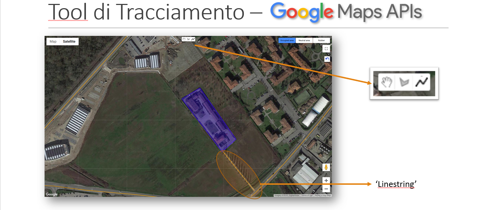
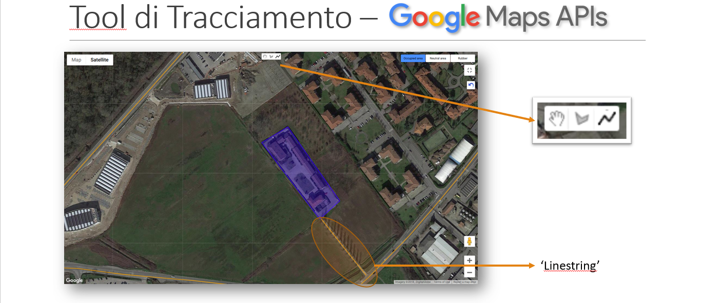

Predictive Maintenance
| Name | Description |
|---|---|
| Project Title | Predictive Maintenance |
| My Role | Technical Support and Project Management |
| Actors | Internal Company Business Unit, external Supplier |
| Project Description | Extension of the customized IoT Platform beyond its initial diagnostic function to a predictive capacity. Implementing machine learning algorithms to forecast the status, health, and potential failures of assets through anomaly detection. Improving the portal's front-end interface to provide visual representation of alerts, customized rules based on algorithm outputs, and a user-friendly dashboard for monitoring algorithm performance over time. |
| Context | Company project supporting After-Sales Business Unit. |
| Tools and Technologies | Python, Azure Machine Learning, PowerBI, ADX (Azure Data Explorer) |
| Duration | 14 months |
| Challenges |
|
| Achievement |
|
| Learning |
|
| Links & Reference | Product Brochure |
Remote Asset Monitoring
| Name | Description |
|---|---|
| Project Title | Remote Monitoring Platform (PoC) supporting Maintenance Activity |
| My Role | Technical Support and Project Management |
| Actors | Internal Company Business Unit, External Supplier |
| Project Description | Created a customized IoT Platform specifically designed for the After Sales team, equipping them with a sophisticated diagnostic tool. This groundbreaking solution provides comprehensive insights into the health, status, and usage patterns of the company's strategic assets. The platform is structured around three essential components: field, cloud (Azure), and a Web Portal. It incorporates advanced functionalities, including near-real-time streaming data, thorough historical data analysis, customizable rules, robust reporting capabilities, and streamlined maintenance planning. |
| Context | Company project supporting After-Sales Business Unit. |
| Tools and Technologies | Azure, ADX (Azure Data Explorer), IoTHub, PowerBI |
| Duration | 12 months |
| Challenges |
|
| Achievement |
|
| Learning |
|
| Links & Reference | Product Brochure |

Mobile Traffic Forecasting
| Name | Description |
|---|---|
| Project Title | Cluster-Based Forecasting of Busy-Hour Downlink Traffic in Cellular Network |
| Actors | Politecnico di Milano & Vodafone |
| Project Description | The dramatic growth in cellular traffic volume requires cellular network operators to develop strategies to carefully dimension and manage the available network resources. Forecasting traffic volumes is a fundamental building block for any proactive management strategy and is therefore of great interest in such a context. In this context, the project takle the problem of forecasting busy hour traffic comparing different approaches and ML algortihm. |
| Context | Work belonging to my MSc thesis, in collaboration with ANTLab (Politecnico di Milano) and Vodafone. |
| Tools and Technologies | Jupyter Notebook and standard Python Libraries for the purpose |
| Programming Languages | Python (libraries list) |
| Duration | 6 months |
| Challenges |
|
| Achievement |
|
| Learning |
|
| Links & Reference | IEEE Paper; ANTLab Polimi |


ACI Project
| Name | Description |
|---|---|
| Project Title | ACI Project |
| Actors | Università degli studi di Pavia |
| Project Description | The ACI project (Anthropentropy Italian Municipalities) aims to measure the land consumption of the Italian territory by means of a new indicator, called Anthropentropy Factor, specifically designed and proposed to measure not only the anthropic presence of man on the territory, but also the fragmentation of the anthropised areas. For this purpose, the project focused on the refactoring of a Web App. |
| Context | Work belonging to my Bachelor's Degree, in collaboration with CSU (Politecnico di Milano) of Univeristy of Pavia. |
| Tools and Technologies | Google Maps API, Visual Studio Code, Open Street Map |
| Programming Languages | Java Script, PhP, SQL, HTML |
| Duration | 4 months |
| Challenges |
|
| Achievement |
|
| Learning |
|
| Links & Reference | Antropentropia |


 

- © Untitled
- Design: HTML5 UP